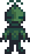

Wildnis-Golem
(Weitergeleitet von Golem der Wildnis)
| Wildnis-Golem | |
 | |
| Information | |
| Auftauchen: | Der Hof |
| Besiegbar: | Ja |
| Basisgesundheit: | 30 |
| Basisschaden: | 5 |
| Basisverteidigung: | 1 |
| Geschwindigkeit: | 3 |
| Erfahrungspunkte: | 5 |
| Variationen: | |
| Beute: | Nach dem Erreichen des Grunds der Minen: |
Der Golem der Wildnis ist ein Monster welches nur Nachts auf Farmen des Hoftyps Wildnis-Hof, oder auf jeglichen anderen Höfen, wenn der Spieler dem Dunklen Schrein der Albträume der in der Hexenhütte steht ein Komisches Brötchen geopfert hat auftaucht. Seine Stärke skaliert mit dem Kampflevel des Spielers.
Verhalten
Sie wandern ziellos umher und kommen dabei dem Spieler langsam näher. Bei Berührung fügen sie dem Spieler Schaden zu. Ihr Verhalten ist das gleiche, wie das des Steingolems.
Strategie
Mit einer Waffe angreifen.
Geschichte
- 1.1: Eingeführt.